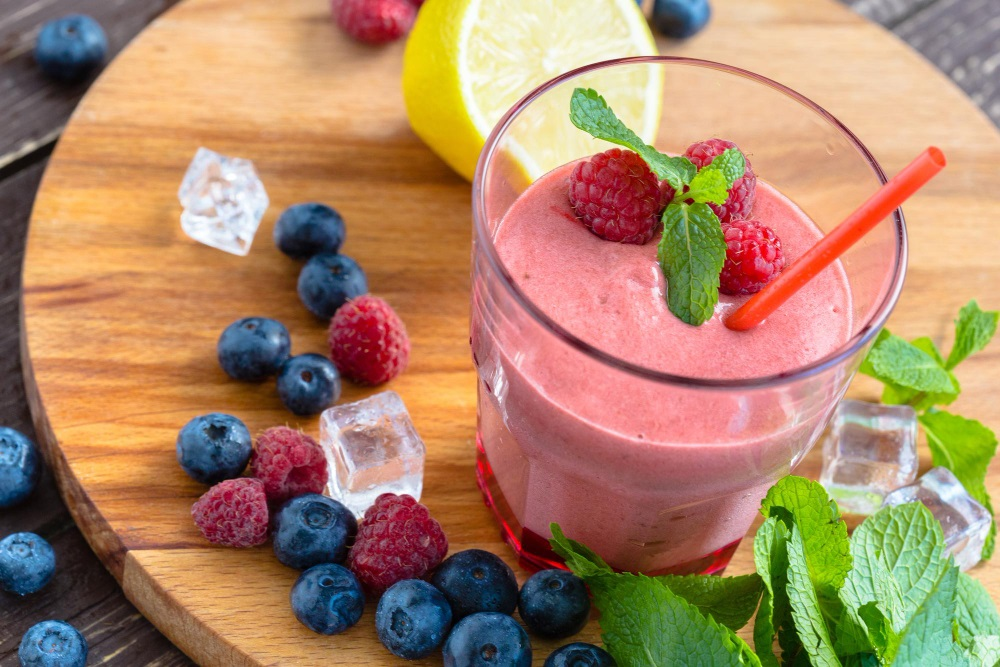

Smoothie de frutos rojos
"Make different teas with the superherbs or create new smoothies with the superfoods. Better yet, take your superherb tea and blend it with your superfoods to make the best elixirs ever." David Wolfe

Ingredientes
- 1/2 taza o 120 ml de agua
- 1 yogur de vainilla o natural
- 1/2 taza o 75 g de fresas congeladas
- 1/2 taza o 75 g de arándanos congelados
- 1/2 taza o 60 g de frambuesas congeladas
- Opcional: un chorrito de leche o de cualquier bebida vegetal
- Opcional: azúcar o edulcorante al gusto
- Un puñado de frutos rojos frescos para decorar
- Una hojita de menta para decorar
Modo de preparación
- Introduce todos los ingredientes en el vaso de la batidora de vaso, en el orden que se indica arriba, y coloca la tapa correctamente.
- Selecciona la velocidad más alta, enciende la máquina y mézclalo todo durante 1 minuto.
- Si la consistencia es demasiado espesa para tu gusto, échale un chorrito de leche o bebida vegetal y bate hasta que alcance la consistencia deseada.
- Añade azúcar o edulcorante al gusto y mezcla bien.
- Vierte la mezcla en un vaso y decóralo con los frutos rojos frescos y la hoja de menta.
Información nutricional
- - Calorías:
- 26 kcal
- - Carbohidratos:
- 4.5 g
- - Grasa total:
- 0.3 g
- - Grasas saturadas:
- 0.1 g
- - Proteínas:
- 0.8 g
- - Fibra:
- 0.6 g
- - Azúcares:
- 4.4 g